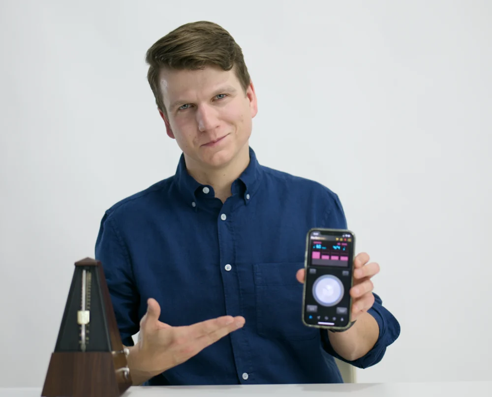

Po skupieniu wszystko robi się proste.
Dziękuję Ci za zaufanie i kłaniam się nisko.
Witam Cię serdecznie w miejscu, w którym uratujemy Twoją koncentrację i stworzymy Twoje skupienie na zawołanie.
Nie masz problemu z lenistwem, po prostu trudno Ci się skupić. Nie ma Twojej winy w braku koncentracji: Twoje skupienie zostało Ci bezceremonialnie ukradzione.
Przeprowadzę Cię krok po kroku przez proces uratowania Twojej koncentracji, wyćwiczenia jej oraz utrzymania w długiej perspektywie.
Oba kursy się uzupełniają: na koncie czeka na Ciebie także Szybkie Czytanie Online.
Widzimy się już za chwilę na pierwszej lekcji!
Piotr Dacjusz Starzyński
Przechodzę do kursów